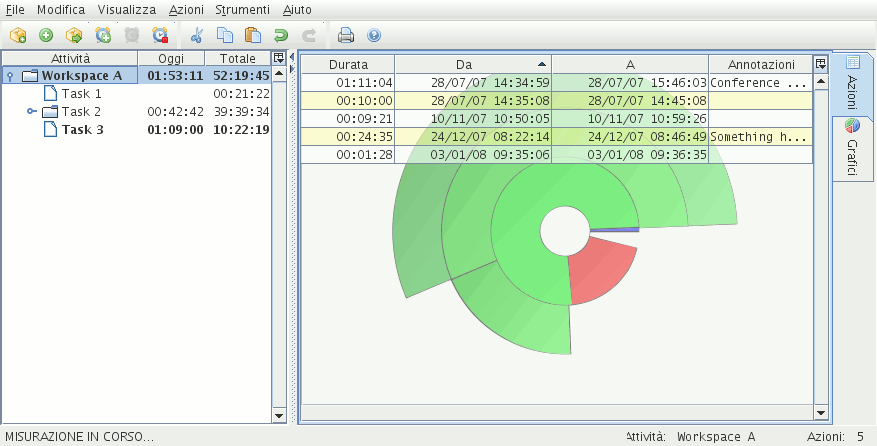

The application has the following windows:
the main window
the reporting panel
other minor windows
The main window is the heart of the application.

Illustration
1: The main window
The following table represents the main window structure.
|
Menu |
|
|
(Actions table/Chart) |
|
Table 1: Main window structure
Click on the links above to view the relevant help.